Machine vibration diagnosis
from ordinary video
OpenCV 5 · an agent that decides what to film next · AWS Graviton
A machine tells you it is dying.
Almost nobody is listening.
- Rotating machines announce failure by vibrating · unbalance, misalignment and looseness show up weeks ahead.
- Reading that needs a contact accelerometer, a trained technician, and a site visit.
- So it is bought for turbines and refinery pumps, and never for the extractor fan, the workshop lathe, the rooftop HVAC.
- Those machines simply run until something breaks.
Because the signal is smaller than your hand.
The thing you want is 25× smaller than the thing you are standing on. That is why pointing a phone at a machine has never been a product.
Hand shake and machine vibration
live at different frequencies.
- cv2.phaseCorrelate measures displacement to a fraction of a pixel, far below what any single frame resolves.
- Highpass every pixel in time, and the vibrating region locates itself · no model, no training data.
- Hand motion is 78.6% below 1 Hz. The machine lives at 5 to 15 Hz. Separate them and the signal survives.
- At 7.3 Hz the hand contributed 0.022 px against 2.885 px of signal · 131× separation.

Six stages, no neural network anywhere.
- Locate what is vibrating · highpass every pixel in time, then boxFilter for energy and texture
- Measure sub-pixel displacement with cv2.phaseCorrelate · 68% of all compute
- Reject correlation failures on MAD and response strength
- Cancel camera motion against a static reference, only when it helps
- Transform to a spectrum · Hann window, coherent gain corrected
- Diagnose from the 1×/2×/3× harmonic ratios, gated on the noise floor
cv2.phaseCorrelate mutates its inputs.
It multiplies each source array by the window in place. Reuse one array as the reference across calls and it decays as base × windowN. 11% of our frames were being quietly destroyed.
# tremor/measure.py - (dx, dy), r = cv2.phaseCorrelate(base, cur, win) + (dx, dy), r = cv2.phaseCorrelate(base.copy(), cur, win)
Two things we had written up as documented limitations were this bug. There is now a regression test that fails without the copy.
Checked against things whose answer we already knew.
| Test | Ground truth | Measured | Error |
|---|---|---|---|
| Oscillator on a phone screen, handheld | 7.30 Hz | 7.276 Hz | 0.33% |
| Ceiling fan, handheld | blade pass ÷ 5 blades | 2.406 Hz = 144 RPM | 1.2% |
| Agent, fault correct (n = 80) | · | 71.2% | · |
| Regression tests | · | 37 passing | · |
The fan number is a closed loop: blade-pass rate and shaft rate are two independent features of the same footage, and they agree to 1.2%.
It does not just look. It asks for a different shot.
- Perception → decision → a new acquisition. The loop closes on the physical world, not on a prompt.
- Low texture → re-aim. Suspected aliasing → ask for 240 fps. Low SNR → brace, then re-aim, then escalate.
- Every guard rail lives in a tool, not in a prompt, so it is testable.
- Exposed over MCP · eight tools any model can drive.
Chosen for a reason, then measured.
| stock OpenCV 5.0.0 | COOL (KleidiCV) | ||
|---|---|---|---|
| End to end | 5.21 ms/frame | 4.14 ms/frame | 1.26× |
| dft_2d | 1.188 ms | 0.634 ms | 1.87× |
| phaseCorrelate | 3.701 ms | 3.050 ms | 1.21× |
And the prediction that mattered: Graviton4's uniform cores should scale where heterogeneous cores do not.
| 8 workers | Graviton4 | Apple M-series |
|---|---|---|
| parallel efficiency | 50.0× realtime (92%) | 22.8× (37%) |
Stated plainly, because a diagnosis you cannot trust is worse than none.
- 30 fps caps you at 15 Hz. Looseness needs the 3rd harmonic, so above ~5 Hz shaft rate you need 240 fps · the agent asks for it.
- It needs visible texture. A clean painted housing gives it nothing to lock onto.
- The COOL 1.26× compares 5.1.0-dev against 5.0.0, so it conflates KleidiCV with upstream changes. We say so in the report.
- It is a screening tool. It tells you which machine deserves a real accelerometer.